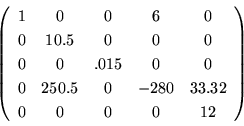
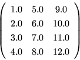

<!DOCTYPE HTML PUBLIC "-//W3C//DTD HTML 3.2 Final//EN">
<!-- Converted with jLaTeX2HTML 98.1p1 release (March 2nd, 1998) + JP patch 2.0 (March 16th, 1998)
patched by Kenshi Muto (mutou@three-a.co.jp), Three-A Systems,Co.,Ltd.
LaTeX2HTML 98.1p1 release (March 2nd, 1998)
originally by Nikos Drakos (nikos@cbl.leeds.ac.uk), CBLU, University of Leeds
* revised and updated by:  Marcus Hennecke, Ross Moore, Herb Swan
* with significant contributions from:
  Jens Lippmann, Marek Rouchal, Martin Wilck and others  -->
<HTML>
<HEAD>
<TITLE>$BL5Bj(B</TITLE>
<META NAME="description" CONTENT="$BL5Bj(B">
<META NAME="keywords" CONTENT="mmformat">
<META NAME="resource-type" CONTENT="document">
<META NAME="distribution" CONTENT="global">
<META HTTP-EQUIV="Content-Type" CONTENT="text/html; charset=iso-2022-jp">
<LINK REL="STYLESHEET" HREF="mmformat.css">
<LINK REL="next" HREF="node1.html">
</HEAD>
<BODY >
<!-- Navigation Panel -->
<A NAME="tex2html1"
 HREF="node1.html">
</A> 
 
   
<BR>
<STRONG> Next:</STRONG> <A NAME="tex2html2"
 HREF="node1.html">$B$3$NJ8=q$K$D$$$F(B...</A>
<BR>
<BR>
<!-- End of Navigation Panel -->

<P>
<DIV ALIGN="CENTER">
<FONT SIZE="+1"><B>Matrix Market Exchange Formats $B$NNc(B
</B></FONT></DIV>
<P>
<BR>
<BR>
<BR>

<P>
$BNc!'(B<U>Coodinate Format</U>$B!JAB9TNs$NI=8=$KMQ$$$k!K(B

<P>
<BR><P></P>
<DIV ALIGN="CENTER">
<!-- MATH: \begin{displaymath}
\left(
\begin{array}{ccccc}
1& 0& 0& 6& 0 \\
 0& 10.5& 0& 0& 0 \\
 0& 0& .015& 0& 0 \\
 0& 250.5& 0& -280& 33.32 \\
 0& 0& 0& 0& 12\\
\end{array}
\right)
\end{displaymath} -->



</DIV>
<BR CLEAR="ALL">
<P></P>

<P>
$B>e$N(B5$B!_(B5$B$NAB9TNs$O0J2<$N$h$&$KI=8=$5$l$k!#(B

<P>
<BLOCKQUOTE><PRE>
%%MatrixMarket matrix coordinate real general
% A 5x5 sparse matrix with 8 nonzeros
5 5  8
1 1	1.0
2 2	10.5
4 2	250.5
3 3	0.015
1 4	6.0
4 4	-280.0
4 5	33.32
5 5	12.0
</PRE></BLOCKQUOTE>
<P>
<BR>
<BR>
<BR>
$BNc!'(B<U>Array Format</U>$B!J<g$KL)9TNs$NI=8=$KMQ$$$k!K(B
       
<BR><P></P>
<DIV ALIGN="CENTER">
<!-- MATH: \begin{displaymath}
\left(
\begin{array}{ccc}
1.0& 5.0& 9.0\\
 2.0& 6.0& 10.0\\
 3.0& 7.0& 11.0\\
 4.0& 8.0& 12.0\\
\end{array}
\right)
\end{displaymath} -->



</DIV>
<BR CLEAR="ALL">
<P></P>

<P>
$B>e$N(B4$B!_(B3$B$NL)9TNs$O0J2<$N$h$&$KI=8=$5$l$k!#(B

<P>
<BLOCKQUOTE><PRE>
%%MatrixMarket matrix array real general
% A 4x3 dense matrix
4 3
1.0
2.0
3.0
4.0
5.0
6.0
7.0
8.0
9.0
10.0
11.0
12.0
</PRE></BLOCKQUOTE>
<P>
<BR><HR>
<!-- Table of Child-Links -->
<A NAME="CHILD_LINKS">&#160;</A>
<UL>
<LI><A NAME="tex2html3"
 HREF="node1.html">$B$3$NJ8=q$K$D$$$F(B... </A>
</UL>
<!-- End of Table of Child-Links -->
<BR><HR>
<ADDRESS>
Masao Takaku
$BJ?@.(B11$BG/(B3$B7n(B16$BF|(B
</ADDRESS>
</BODY>
</HTML>